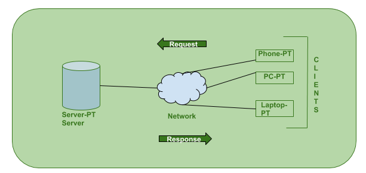

SYLLABUS
1.... Client/Server concepts 2.... Components of Web Application 3.... type of web content 4.... HTTP request 5.... HTTP response 6.... Generation of dynamic web page 7....Application Server 8.... Web SecurityClient/Server concepts
The Client-server model is a distributed application structure that partitions task or workload between the providers of a resource or service, called servers, and service requesters called clients. In the client-server architecture, when the client computer sends a request for data to the server through the internet, the server accepts the requested process and deliver the data packets requested back to the client. Clients do not share any of their resources. Examples of Client-Server Model are Email, World Wide Web, etc. How the Client-Server Model works ? In this article we are going to take a dive into the Client-Server model and have a look at how the Internet works via, web browsers. This article will help us in having a solid foundation of the WEB and help in working with WEB technologies with ease. Client: When we talk the word Client, it mean to talk of a person or an organization using a particular service. Similarly in the digital world a Client is a computer (Host) i.e. capable of receiving information or using a particular service from the service providers (Servers). Servers: Similarly, when we talk the word Servers, It mean a person or medium that serves something. Similarly in this digital world a Server is a remote computer which provides information (data) or access to particular services. So, its basically the Client requesting something and the Server serving it as long as its present in the database. Components of Web Application
Every web application architecture is built based on a layered architecture. However, it all depends on the app scale. Large applications may have four to six layers whereas small applications may have three layers. Each layer functions independently and its components are closed. Below are the four commonest layers of web application architecture. Presentation Layer: The presentation layer aids in communication between the browser and the user interface of the application that eases the overall user interaction. Every presentation layer is created through JavaScript, HTML, CSS, and its frameworks. Business Layer: The business layer helps in processing the browser requests, performs the business logic of the requests, and shares the same back to the previous layer. This layer primarily determines the business rules of the web app. Data Access Layer: The data access layer is used to access data from XML, binary files, and other types of storage. In addition, it also helps in creating, reading, updating, and deleting operations. Data Service Layer: The final one is the data service layer which ensures data security and stores the entire data. This layer safeguards the data by separating the app business logic from the client-sidetype of web content
different kinds of contents and formats come into play which offer us a wide range of options, depending on what we want to transmit to our audience. The most important part is picking the option that best meets the specific needs of this moment, network, and type of information. Keep reading to discover more about the content that will help you reach your goals: he very title of this section says it all: the objective when we talk about web content is to increase the average time that the user spends on the page, which translates into: * Improving the organic positioning: Google values users that spend time on a page * Providing value to the reader: the time that a person spends on a web page is a reflection of the content quality and the user’s interestHTTP request
An HTTP request is made by a client, to a named host, which is located on a server. the aim of the request is to access a resource on the server. To make the request, the client uses components of a URL (Uniform Resource Locator), which includes the information needed to access the resource. The components of a URL explains URLs. A correctly composed HTTP request contains the following elements: A request line. A series of HTTP headers, or header fields. A message body, if needed. Each HTTP header is followed by a carriage return line feed (CRLF). After the last of the HTTP headers, an additional CRLF is used (to give an empty line), and then any message body begins.HTTP response
An HTTP response is made by a server to a client. The aim of the response is to provide the client with the resource it requested, or inform the client that the action it requested has been carried out; or else to inform the client that an error occurred in processing its request. An HTTP response contains: A status line. A series of HTTP headers, or header fields. A message body, which is usually needed. As in a request message, each HTTP header is followed by a carriage return line feed (CRLF). After the last of the HTTP headers, an additional CRLF is used (to give an empty line), and then the message body begins.Generation of dynamic web page
A server-side dynamic web page is a web page whose construction is controlled by an application server processing server-side scripts. In server-side scripting, parameters determine how the assembly of every new web page proceeds, including the setting up of more client-side processing. A client-side dynamic web page processes the web page using JavaScript running in the browser as it loads. JavaScript can interact with the page via Document Object Model, or DOM, to query page state and modify it. Even though a web page can be dynamic on the client-side, it can still be hosted on a static hosting service such as GitHub Pages or Amazon S3 as long as there isn't any server-side code included.Application Server
Application Server is a type of server designed to install, operate, and host applications. In the early days of application servers, there was a huge growth in the number of applications brought to the Internet. Those applications became bigger and bigger with the demand for adding more and more functionalities to the application and become more complex to run and maintain. There was a need for some kind of program on the network while it will share application capabilities in an efficient and organized manner.Web Security
Web security refers to protecting networks and computer systems from damage to or the theft of software, hardware, or data. It includes protecting computer systems from misdirecting or disrupting the services they are designed to provide. Web security is synonymous with cybersecurity and also covers website security, which involves protecting websites from attacks. It includes cloud security and web application security, which defend cloud services and web-based applications, respectively. Protection of a virtual private network (VPN) also falls under the web security umbrella.